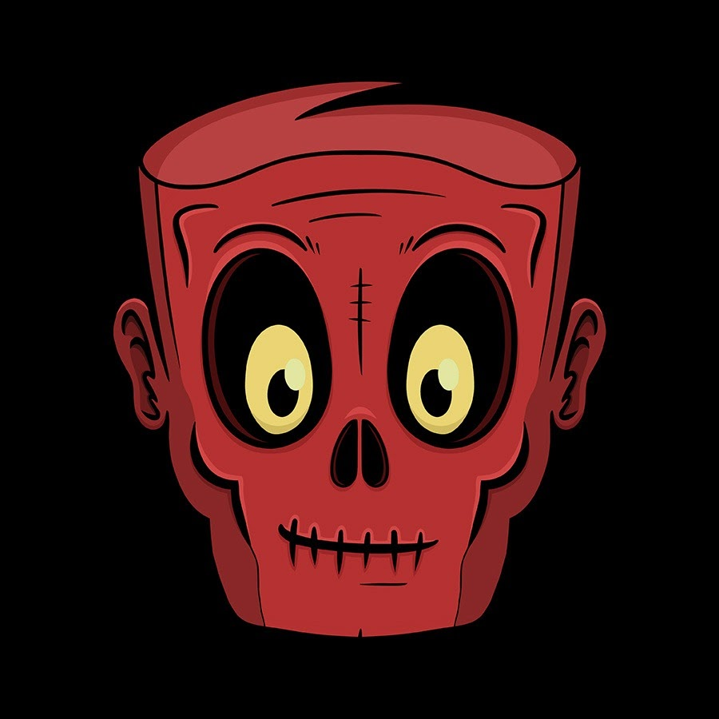

J'espère que vous avez autant hâte que moi pour le jeu.
En conclusion, Dying light le premier et le deuxième sont les jeux qui ont rendu les jeux de parcours et les
jeux de zombies plus amusants. Dying light a complètement changé le genre zombies pour les jeux vidéos
maintenant, plus en plus de jeux de zombies ont du parcours, mais
aucun n'a battu dying light et encore moins vont battre dying light 2, car il rajoute un petit aspect des jeux
rpg et il est plus réaliste. J'espère que vous allez aimer le jeu.
| Créateur de Dying light 2 et les consoles avec le jeu |
| Developpeurs |
Techland |
| Directeur |
Adrian Ciszewski |
| Concepteur principal |
Tymon Smektala |
| écrivain |
Jerrold Brown |
| Composeur de musique |
Olivier Deriviere |
| Platforme |
Nintendo Switch |
|
Playstation 4 |
|
Playstation 5 |
|
Xbox one |
|
Xbox one |
|
Xbox series X/S |
| Mode de jeu |
Solo ou multijoueur PVE |
| Trois youtubers ayant la chance de jouer à dying light 2. |
| OniZombies |
RoboKast |
Kevduit |
|  |
 |
 |
page suivante